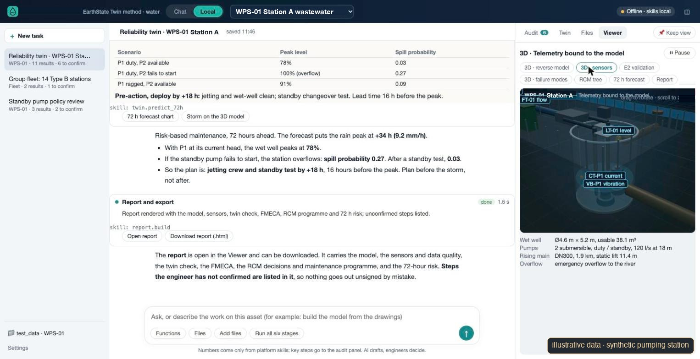
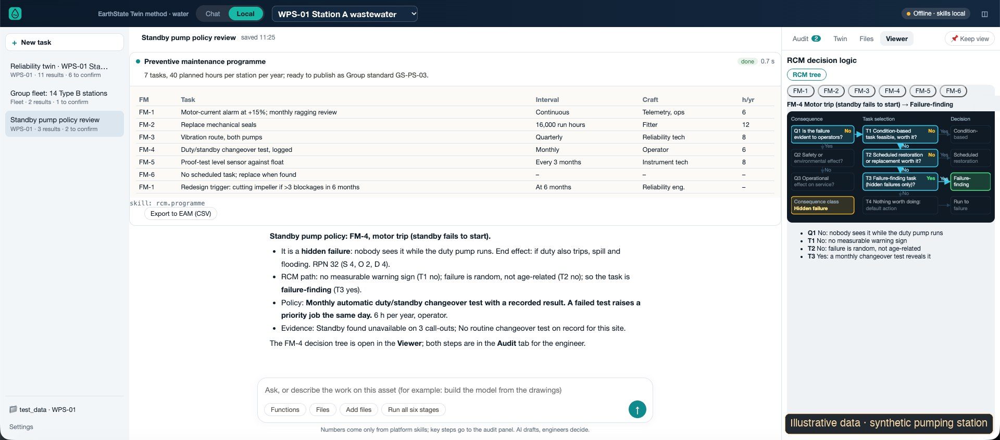

Product 02 · EarthState Water
Which station fails first when the storm arrives, and what should the crew do before it?
EarthState Water is a reliability twin for pumping stations. It takes each failure mode through to a maintenance task an engineer has agreed, and uses rainfall forecasts and station telemetry to plan work before a storm, not after it.
In development

What it does
From failure mode to a job on the plan
One criticality scale
Where operating companies in a group each score assets their own way, the scores are brought onto one consequence and likelihood scale, and the basis for each score stays visible.
Failure modes
Each failure mode of a station is listed with its effect, such as a spill, flooding or a permit breach, and scored for severity, frequency and how easily it is detected.
Maintenance decision logic
Every failure mode goes through the RCM questions, and the path taken is shown. The AI drafts the reasoning; an engineer accepts or changes it, and the sign-off is recorded.
Maintenance programme
One task per failure mode, with its interval, craft and hours per year, ready to issue as a group standard with an owner and a review date.
72 hours ahead
Rainfall forecast, wet-well level, pump current and vibration, and past work orders give a spill risk for each scenario, and a job to do before the peak.
From defect to standard
Site records attach to the failure mode they belong to. When a defect keeps returning, a revision of the standard is proposed for its owner to approve.

How the AI is used
The AI drafts. The engineer decides.
The numbers come from the platform's calculation skills, never from the language model. Key steps go to an audit panel, and the report lists every step an engineer has not yet confirmed, so nothing is issued unsigned by mistake.
Low-cost sensors are placed on the component they measure in the 3D model. Crews carry on working as they do now.
Status
What is ready, and what is not
| Maturity | Working prototype; a walkthrough version is being prepared. It is being built into the shared EarthState core. |
|---|---|
| Demonstration data | One synthetic wastewater pumping station and a synthetic group of stations. All values on screen are illustrative; none is a measurement or a validated result. |
| Not yet done | It has not been run on an operator's own stations. Results on real telemetry would need calibration and engineer review first. |
| Method | The same method as EarthState Grid: a model an engineer can check, numbers from calculations, and an audit trail from input to result. |